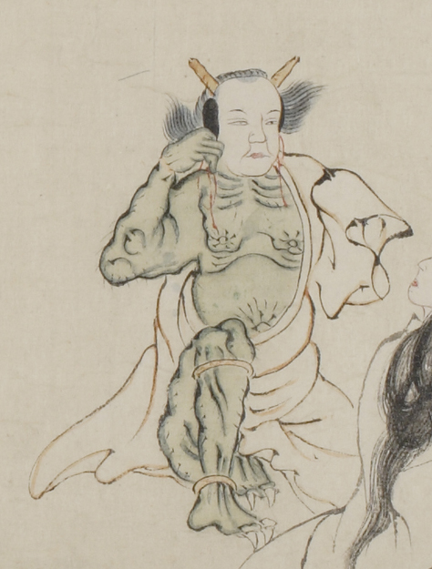

人間の顔のような面をつけた鬼。長い髪で、黄色い2本の角が生えている。緑色の体で臍が大きく、腹部は膨らんでいる。白い浴衣のような衣を身につけ、片肌脱ぎにし、右手でお面を持って顔に当てている。
出典：親書誌：U426_nichibunken_0058：地獄草紙絵巻；ジゴクゾウシエマキ／日付：2006／資源識別子：U426_nichibunken_0058_0012_0000
Copyright (c)2010- International Research Center for Japanese Studies, Kyoto, Japan. All rights reserved.